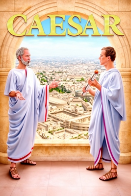
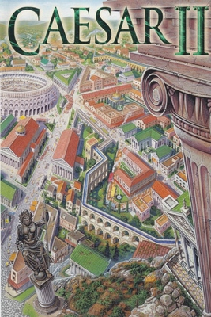
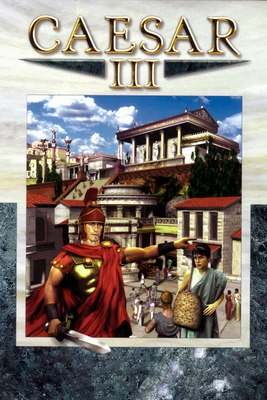
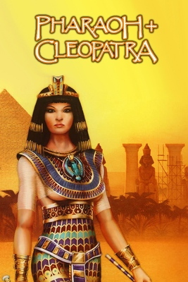
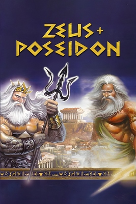
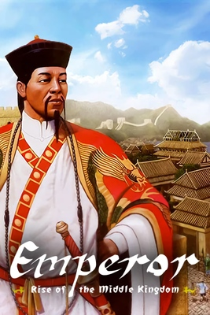

Everything worth knowing about Caesar, Caesar II, Caesar III, Pharaoh, Zeus, and Emperor — the games, their file formats, and the open-source engines keeping them running today.

Top-down, pre-isometric — predates the shared SG/.555 pipeline entirely, its own reverse-engineering problem. Designer David Lester, programmer Simon Bradbury. Amiga first (Oct 12), DOS/Atari ST/Mac in 1993.

Transitional generation. Same core team (Lester/Bradbury), Chris Beatrice joining on art. Still no open documentation of its asset formats.

Isometric 2D sprites on the .sg2 + .555 asset pipeline, .map scenarios, .sav saves. Official map editor landed in the v1.1 patch.

Same engine as Caesar III, moved to Ancient Egypt, now on .sg3. Bundled as Pharaoh Gold in 2001.

An engine revamp: global labor pool replaces labor walkers, no forts, elite housing built directly. Same designer/programmer team as Pharaoh.

Built on the Zeus engine, spanning Xia to Song-Jin China. Last title on the 2D sprite engine, and the first with multiplayer.
Related, not core — Caesar IV (2006) · Children of the Nile (2004) · Pharaoh: A New Era (2023) · Nebuchadnezzar (2021, spiritual successor)